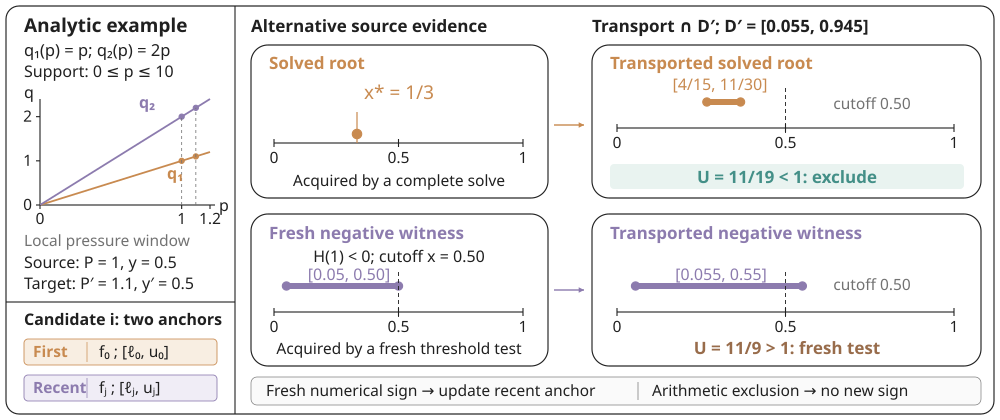
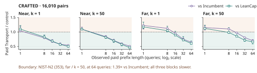

Scientific data systems · Adsorption screening
Transporting Root Evidence
for Repeated Adsorption Ranking
Screen adsorption candidates across changing pressures and gas compositions, while reusing numerical evidence from earlier queries.

2.61 s versus 5.22 s in a representative 64-query CRAFTED CO₂/N₂ stream.
16,010 configuration pairs · Transport versus LeanCap · Setup and acquisition included.
From operating conditions to a shortlist
Enter a pressure and feed composition, compute a ranking, inspect the underlying isotherms and save the results. These are screen recordings of the same interactive workbench you can open below.
- 1. Set the conditionsChoose total pressure, gas-1 feed fraction and how many candidates to return.
- 2. Inspect the candidatesRun the query and select a pair to see the curves behind its selectivity.
- 3. Compare and exportChange the operating condition, inspect the new shortlist and download its CSV.
Rank, inspect and export

The browser example uses synthetic curves in consistent arbitrary units. Paper timings below come from separate CRAFTED and NIST measurements. To screen your own curves, use the repository’s Python interface.
See when an earlier solve can save work
Try root bounds · MP4 · GIF

Check whether reuse pays off for your workload

Abstract
Pressure and composition sweeps repeatedly rank adsorption materials while reusing the same pure-gas curves. Each mixture score requires an implicit equilibrium, and a warm start reduces its cost only after the candidate reaches the numerical solver. Transporting a previously established root enclosure can exclude a candidate before a new integral evaluation. For binary ideal adsorbed solution theory, two partial-pressure ratios give an arithmetic destination enclosure conditional on supported equilibrium. We derive its containment and widening, and integrate it with distinct eligible lower witnesses and a shared static cap index. Solved brackets and fresh negative threshold tests use the same interface; direct-score predicates and an unknown outcome handle numerical uncertainty. A ten-policy study uses 353 NIST curve pairs and 16,010 CRAFTED configuration pairs. On four 64-query CRAFTED streams, paid transport costs 0.456–0.655 times lean cap indexing; a separate matched study gives 0.485–0.623 times on-demand warm solving, with every paired block favorable. Every original one-query CRAFTED prefix loses to LeanCap and Incumbent; none in the separate study beats on-demand warm solving in all blocks. Matched warm and solved-root controls locate the demonstrated benefit in historical root bounds; additional negative-witness retention does not consistently improve paid time. Size and arrival studies expose further losses. A separately timed 0.01–1 bar sweep adds a NIST mixture relation and shows both gains and losses depending on acquisition pressure and k.
Overview
Adsorption screening often asks the same ranking question at many pressure and feed conditions. The pure-gas curves stay fixed, but each mixture score requires solving an implicit equilibrium. This work reuses the root enclosure from a previous condition as a bound at the next condition. A warm start reduces numerical work after a candidate reaches the solver; a transported bound can eliminate the candidate before a new integral evaluation.
Method
A source solve supplies an enclosure [ℓ, u] containing a supported equilibrium root. For source partial pressures f₁, f₂ and destination partial pressures f′₁, f′₂, let cᵢ = f′ᵢ / fᵢ. The destination enclosure uses only arithmetic:
ℓ̂ = min {c₁ℓ, 1 − c₂(1 − ℓ)},
û = max {c₁u, 1 − c₂(1 − u)}.
The containment statement is conditional on a supported destination equilibrium and a genuine source enclosure. Intersecting with the destination domain tightens the result. The ranking executor converts this interval to a score bound, compares it with the active top-k threshold, and performs a fresh numerical test only when the bound cannot decide. A fresh negative threshold test can also supply a source enclosure; an arithmetic exclusion does not create a new residual sign.

Results
On all four original 64-query CRAFTED streams, Transport uses 0.456–0.655 times the paid time of LeanCap. A separate matched study measures 0.485–0.623 times on-demand warm solving, with every paired block favorable. The table retains all eight final-horizon configurations, including the adverse original NIST far/k = 50 comparison.
| Relation | Stream | k | Transport / LeanCap | Transport / WarmOnDemand | ||
|---|---|---|---|---|---|---|
| Original study | Faster blocks | Separate study | Faster blocks | |||
| NIST | Near | 1 | 0.744 [0.585, 0.799] | 3/3 | 0.617 [0.571, 0.782] | 3/3 |
| NIST | Near | 50 | 0.761 [0.732, 0.792] | 3/3 | 0.767 [0.604, 0.872] | 3/3 |
| NIST | Far | 1 | 0.831 [0.808, 0.897] | 3/3 | 0.833 [0.773, 0.834] | 3/3 |
| NIST | Far | 50 | 1.029 [0.882, 1.523] | 1/3 | 0.961 [0.955, 0.961] | 3/3 |
| CRAFTED | Near | 1 | 0.500 [0.488, 0.512] | 3/3 | 0.485 [0.464, 0.534] | 3/3 |
| CRAFTED | Near | 50 | 0.456 [0.447, 0.503] | 3/3 | 0.492 [0.487, 0.501] | 3/3 |
| CRAFTED | Far | 1 | 0.601 [0.601, 0.689] | 3/3 | 0.584 [0.567, 0.620] | 3/3 |
| CRAFTED | Far | 50 | 0.655 [0.586, 0.667] | 3/3 | 0.623 [0.603, 0.639] | 3/3 |
Paid time includes construction, acquisition, query processing and teardown. Acquisition uses P₀ = 0.3 bar, y₀ = 0.15. “Faster blocks” counts the paired blocks favoring Transport. All four original one-query CRAFTED comparisons lose to LeanCap in every block; all four 64-query comparisons win in every block. Ranges describe technical blocks, not confidence intervals. WarmOnDemand comparisons use separate clocks and must not be pooled with the original study. Curated data.

Scope and limitations
The implementation addresses binary mixtures with positive piecewise-linear pure-gas curves on declared finite support and an explicit origin rule. Small pools, high k and larger state changes can remove the paid-time advantage. The original NIST far/k = 50 cell is mixed against LeanCap (median ratio 1.029; 1/3 faster blocks) and loses to Incumbent (1.391; 0/3 faster blocks). On the separate operating-range CRAFTED sweep, acquisition at 0.01 bar loses at 64 queries for k = 1 and 50, whereas acquisition at 1 bar wins. Historical solved roots explain the demonstrated benefit; additional negative-witness retention does not consistently improve paid time. Finite numerical checks establish neither all-domain floating-point soundness nor physical IAST accuracy.
Implementation
The repository provides the native C++ kernel, a Python interface, tests, and a synthetic repeated-ranking example. It requires GNU/Linux, Python 3.10+, NumPy and GCC with libquadmath. The native library builds on first use.
git clone https://github.com/OliverDOU776/Transporting-Root-Evidence-for-Repeated-Adsorption-Ranking.git
cd Transporting-Root-Evidence-for-Repeated-Adsorption-Ranking
python -m pip install .
python examples/repeated_ranking.pyBibTeX
@misc{wang2026transporting,
title = {Transporting Root Evidence for Repeated Adsorption Ranking},
author = {Wang, Zijia and Hong, Haoliang and Li, Xuhui and Bai, Jingyang and Nie, Binjian},
year = {2026},
url = {https://github.com/OliverDOU776/Transporting-Root-Evidence-for-Repeated-Adsorption-Ranking}
}